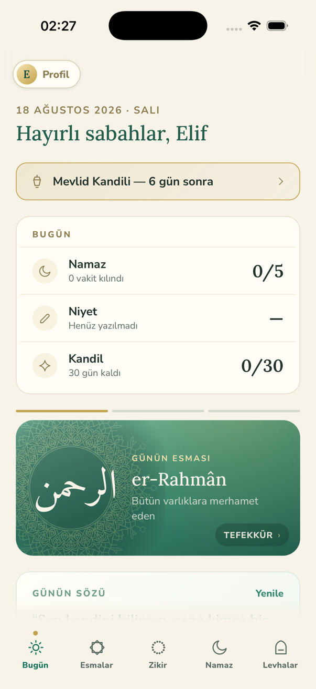
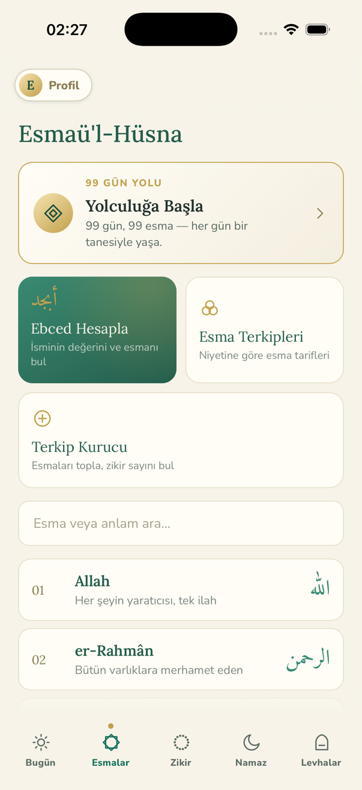
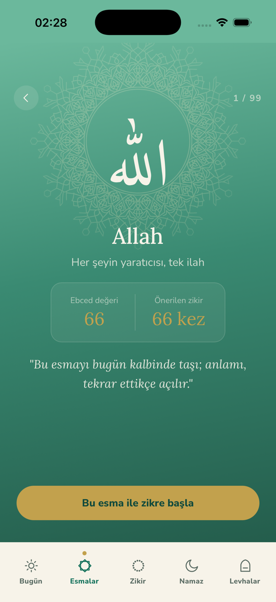
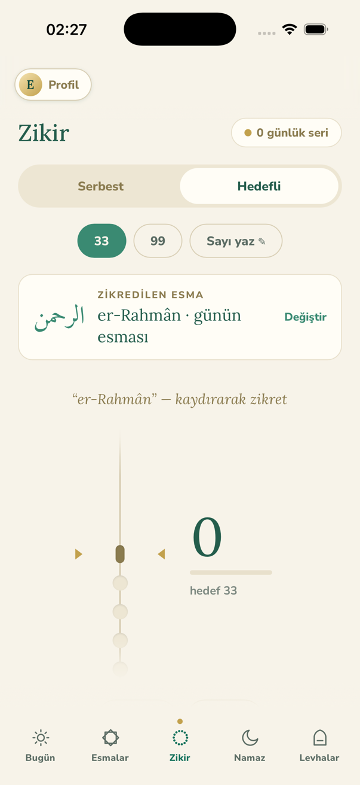
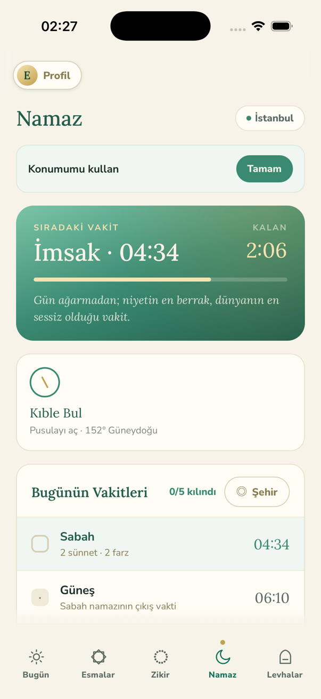
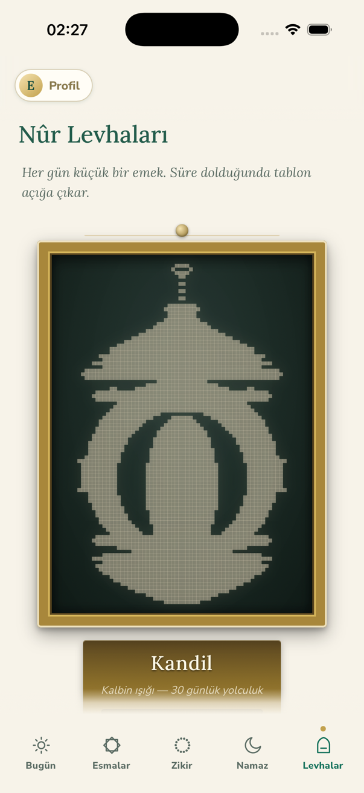

Tasavvuf İzinde
Doksan dokuz esma, günün ritmine yerleşsin.
iOS · Ücretsiz · Türkçe, English
Yakında App Store'da
Esmaü'l-Hüsna'yı ezberlenecek bir liste olarak değil, güne yayılan bir yol olarak sunar. Sabah bir esma, gün içinde bir zikir, vakti gelince bir hatırlatma. Konumuna göre namaz vakitleri ve kıble pusulası da aynı yerde durur.






99 Esmaü'l-Hüsna
Her esmanın anlamı, Arapça yazımı, ebced değeri ve önerilen zikir sayısı. İsme ya da anlama göre arayabilir, bir esmaya dokunup doğrudan zikre başlayabilirsin.
99 Gün Yolu
Her güne bir esma düşer, doksan dokuz günde tamamlanır. Program takvim gününe göre ilerler; bir günü kaçırmak seni başa döndürmez.
Zikir sayacı
Serbest ya da hedefli (33, 99 veya kendi sayın). Boncuk dizisini kaydırarak sayarsın; her boncukta telefon hafifçe tıklar. Terkip seçtiysen esmalar sırayla kendiliğinden ilerler.
Namaz vakitleri ve kıble
Konumuna göre günün vakitleri, sıradaki vakte kalan süre ve pusulayla kıble yönü. Hesaplama yöntemi seçilebilir, varsayılan Diyanet İşleri Başkanlığı. Başka bir şehrin vakitlerine de bakabilirsin.
Esma terkipleri ve ebced
Niyetine göre esma tarifleri — rızık, şifa, aile, yol, korunma… Her terkip hangi esmaların hangi sırayla zikredileceğini söyler. İsminin ebced değerinden kendi esmanı da bulabilirsin.
Hesap yok, sunucu yok
Kayıt olmazsın, giriş yapmazsın. Zikirlerin, niyetlerin ve ilerlemen yalnızca kendi telefonunda durur. Cihazdan çıkan tek şey, namaz vakti hesaplamak için gönderilen konum koordinatlarıdır.